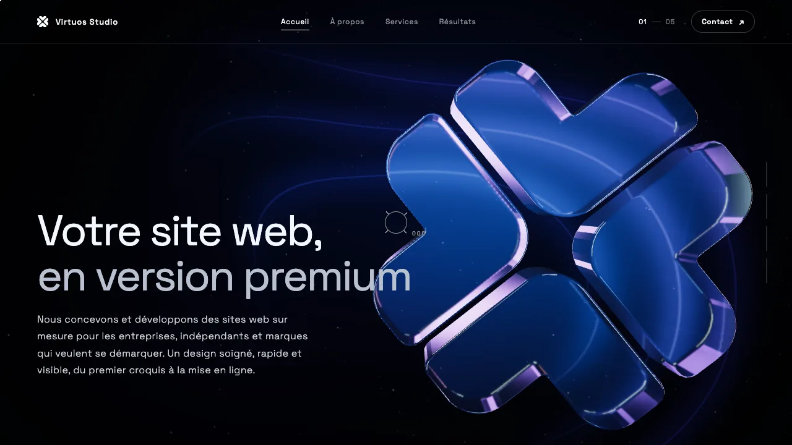
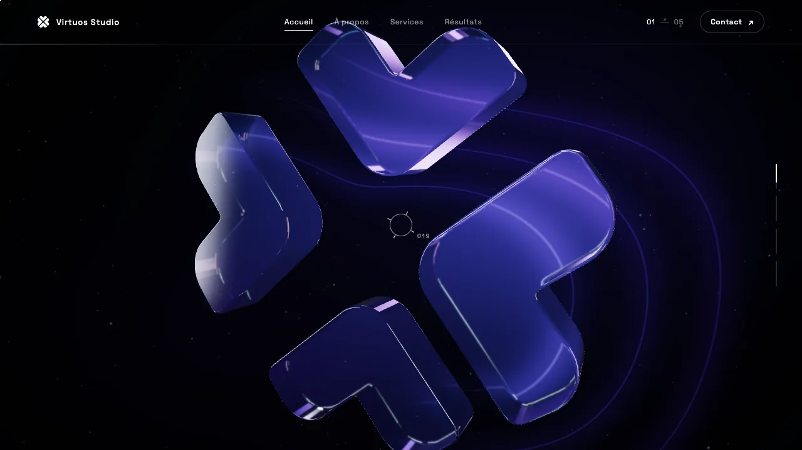
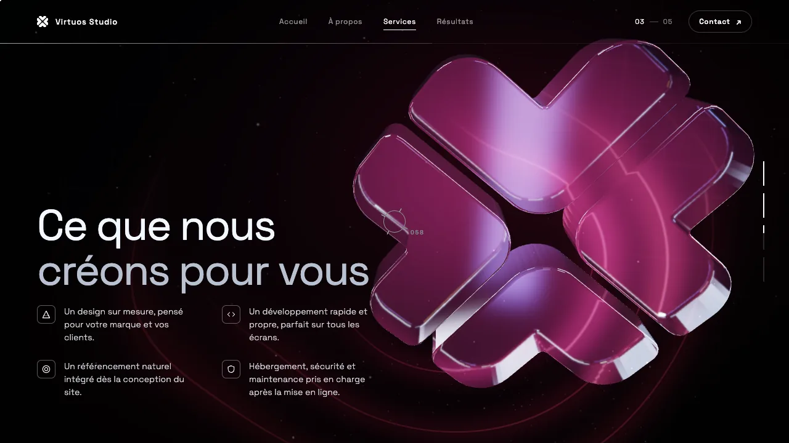
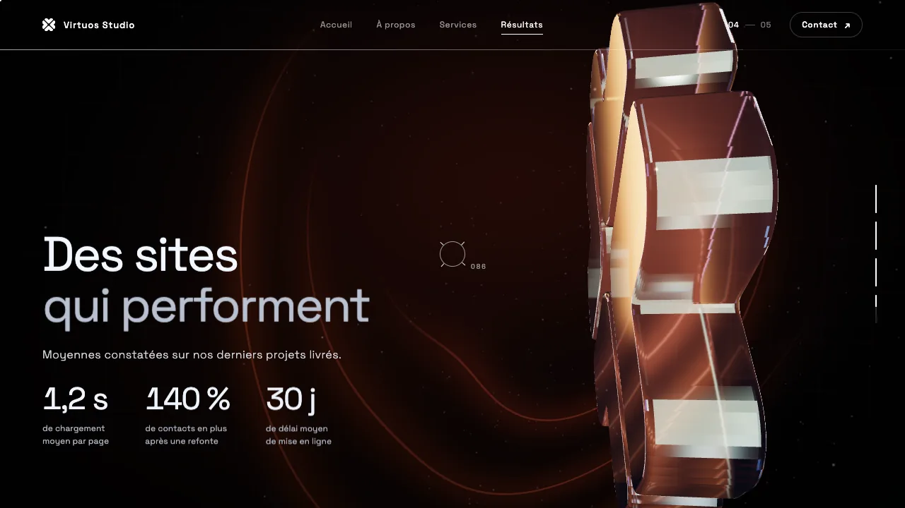
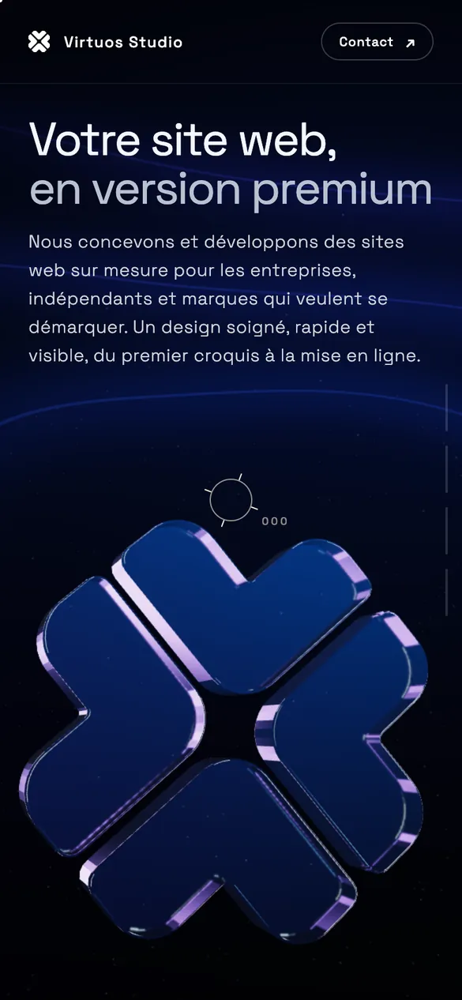
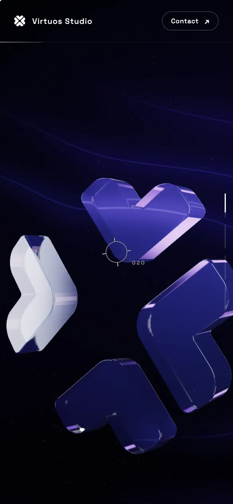
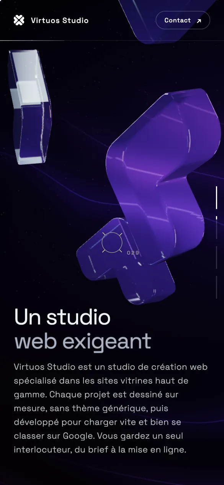

Projet
VirtuosWebsite — concept 3D
Concept réalisé par notre studio : un logo en verre 3D qui se décompose et se recompose au défilement, avec une ambiance qui change à chaque chapitre.
Présentation
Concept de site vitrine pour Virtuos Studio : le logo, modélisé en verre 3D, se décompose et se recompose pendant que l’on fait défiler le site. Quatre chapitres (Accueil, À propos, Services, Résultats) puis un contact, une couleur dominante propre à chaque chapitre, un curseur personnalisé et un écran de chargement. Rendu en temps réel dans le navigateur, sans vidéo.
Objectifs
- Montrer le savoir-faire 3D du studio
- Raconter l’offre en chapitres, au rythme du défilement
- Marquer les esprits avec un logo vivant
Points forts
- Logo en verre qui se décompose et se recompose au scroll
- Ambiance colorée différente à chaque chapitre
- Curseur personnalisé, écran de chargement et affichage adapté au mobile
Captures — ordinateur




Captures — smartphone (responsive)


